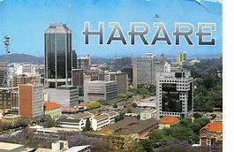

Zimbabwe is generally a safe country to visit. As in any country, you need to be cautious and careful in the cities and major towns like Harare and Bulawayo. Tourist police in Victoria Falls have been a massive help in reducing the nuisance factor from touts and hawkers, and the national parks which most people visit on safari holidays in Zimbabwe experience little crime. In recent years, politics have caused great distress and damage in Zimbabwe, bringing an image of chaos and insecurity to mind. Whilst the situation in the country has vastly improved from the days of white-owned farm invasions and violent urban unrest, some political tensions and troubles prevail and you should always avoid large gatherings. We keep a close eye on developments in Zimbabwe, and always urge all of our potential travellers there to do the same – the Foreign & Commonwealth Office and BBC websites are good resources for current information. Time in Zimbabwe Zimbabwe doesn't operate daylight saving time, and is two hours in advance of Greenwich Mean Time (GMT+2) during the summer months, as well as during the winter months. Currency in Zimbabwe Zimbabwe abandoned the now infamous Zimbabwe dollar in 2009 after years of record high levels of inflation. It has been using the US dollar as its currency ever since, the South African rand is also widely accepted. Credit cards are becoming easier to use in tourist and business hubs such as Victoria Falls, Harare and Bulawayo but many visitors will still favour cash over plastic when visiting Zimbabwe’s more remote areas. Rather bizarrely, due to a lack of dollar and rand coins circulating in Zimbabwe, change in supermarkets and at petrol stations is sometimes given to customers in sweets or pens. As charming as some may find this quirk in Zimbabwe’s economy, it’s hardly a solid base on which to build a solid monetary policy. With that in mind Zimbabwe’s central bank introduced special coins into circulation in mid-December 2014. The coins, which are pegged to the US dollar, come in denominations of one cent, five cent, 10 cent and 25 cent. It’s hoped the introduction of smaller denominations into circulation will help further stabilise Zimbabwe’s economy – which should further help ordinary Zimbabweans return to a degree of normalcy. Zimbabwe's International Dialling Code Zimbabwe's International Dialling Code is +263. Calling to Zimbabwe, you need to dial 00 263, followed by an area code (e.g. 4 for Harare); calling from Zimbabwe, you need to dial the relevant country code (e.g. +44 for the United Kingdom, or +1 for the United States of America). Currently (Aug 09), international calls with TelOne cost between US$0.23 and US$1.10 per minute, depending on the destination of the call (which country; fixed/mobile) and the time of the call (peak/off-peak).

About us | Form